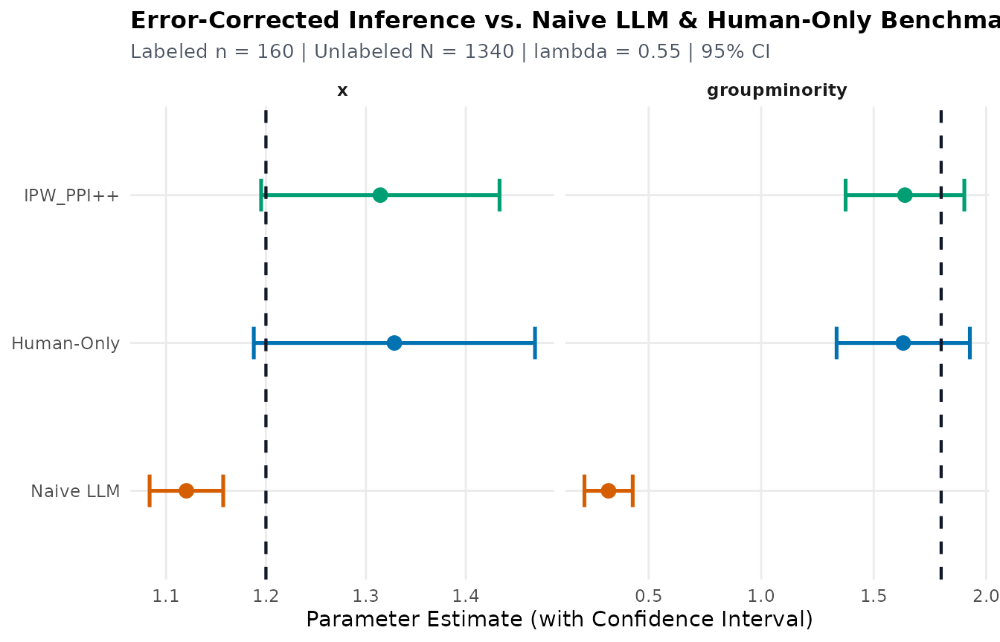
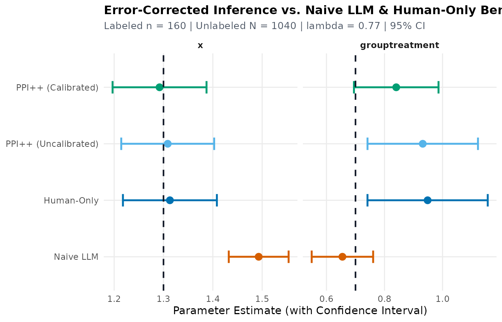

Stratified Validation Sampling, IPW-PPI, Cross-Fitted Calibration, and Custom Backends
Source:vignettes/stratified-and-nonlinear-ppi.Rmd
stratified-and-nonlinear-ppi.RmdBeyond Simple Random Validation and Linear Calibration
Standard Prediction-Powered Inference (PPI /
PPI++) assumes that the human-validated subset is drawn by
simple random sampling (SRS) and uses linear gradient rectifiers on the
raw LLM predictions. In real applied studies, researchers routinely
encounter three additional challenges:
-
Unequal-probability validation sampling
(
select_validation_sample()+ IPW-PPI): When a minority subgroup represents only 15% of a corpus—or when extreme scores matter most—researchers oversample rare strata to maximize Differential Prompt Functioning (DPF) power or Neyman precision. Passing exact inclusion probabilities or Horvitz-Thompson weights toppi_mean()andppi_lm()activates exact Active / IPW-PPI++ estimation (Zrnic & Candès, 2024). -
Non-linear LLM score distortion
(
ppi_calibrated()): LLM ratings frequently suffer from floor/ceiling compression, S-curve saturation, or covariate-dependent non-linear distortion.ppi_calibrated()learns a -fold cross-fitted natural spline, polynomial, logistic, or custom calibrator strictly out-of-fold before applyingPPI++, preserving exact unbiasedness while slashing standard errors. -
Offline and custom scoring pipelines
(
backend_custom()): Many research teams run local open-weights models, institutional endpoints, or offline packages (such asairgapllm) rather than hosted APIs.backend_custom()wraps any R callable intocode_texts()with zero added dependencies.
1. Stratified & Neyman Validation Sampling
(select_validation_sample())
Consider a corpus of
open-ended responses in which an underrepresented subgroup
(group = "minority", 15% of the corpus) has both a higher
true distress mean and stronger predictor slope, while the LLM exhibits
systematic downward bias and slope attenuation:
set.seed(2026)
M <- 1500
group <- factor(
c(rep("majority", 1275), rep("minority", 225)),
levels = c("majority", "minority")
)
x <- rnorm(M)
is_min <- as.numeric(group == "minority")
# True outcome: mean differs sharply across groups and slope depends on x
y_true <- 2.0 + 1.2 * x + 1.8 * is_min + rnorm(M, sd = 0.9)
# Biased, attenuated LLM proxy with subgroup DPF
y_llm <- 0.9 + 0.65 * y_true - 0.8 * is_min + 0.35 * x + rnorm(M, sd = 0.5)
corpus <- tibble::tibble(
unit_id = sprintf("u%04d", seq_len(M)),
group = group,
x = x,
llm_score = y_llm,
true_y = y_true
)To ensure adequate statistical power for minority-group DPF auditing, we draw human validation texts using equal allocation across the two subgroups (80 majority + 80 minority)—oversampling the minority stratum by nearly :
vs_equal <- select_validation_sample(
corpus,
n = 160,
strategy = "stratified",
strata_col = "group",
allocation = "equal",
seed = 101
)
vs_equal
#>
#> ── Validation Sample Plan (stratified / equal)
#> Selected 160 of 1500 units (10.7%) | Weight range: [2.81, 15.94]
#> # A tibble: 2 × 6
#> stratum n_pop n_selected inclusion_prob weight stratum_sd
#> <chr> <int> <int> <dbl> <dbl> <dbl>
#> 1 majority 1275 80 0.0627 15.9 NA
#> 2 minority 225 80 0.356 2.81 NANotice that the Horvitz-Thompson weights sum exactly to the corpus size :
sum(vs_equal$weights[vs_equal$selected])
#> [1] 1500When minimizing overall variance is the primary goal (rather than
balanced subgroup DPF power), strategy = "neyman" allocates
validation budget proportionally to
using the observed LLM scores:
vs_neyman <- select_validation_sample(
corpus,
n = 160,
strategy = "neyman",
strata_col = "group",
score_col = "llm_score",
seed = 101
)
vs_neyman$stratum_summary
#> # A tibble: 2 × 6
#> stratum n_pop n_selected inclusion_prob weight stratum_sd
#> <chr> <int> <int> <dbl> <dbl> <dbl>
#> 1 majority 1275 135 0.106 9.44 1.33
#> 2 minority 225 25 0.111 9 1.362. Horvitz-Thompson Active / IPW-PPI (ppi_mean() &
ppi_lm())
Now suppose human annotators code only the
units selected by vs_equal, leaving the remaining
units unlabeled (NA). Because minority rows
are heavily oversampled in the validation set, an unweighted
mean or regression over the labeled sample severely overstates the
population mean! Supplying
inclusion_prob = "inclusion_prob" (or
weights = "sampling_weight") activates exact
Horvitz-Thompson Active IPW-PPI++:
study_df <- vs_equal$data
study_df$human_score <- ifelse(study_df$is_validation, study_df$true_y, NA_real_)
# Population mean: compare true population mean vs unweighted vs IPW-PPI++
true_pop_mean <- mean(corpus$true_y)
fit_mean_unw <- ppi_mean(study_df, truth_col = "human_score", pred_col = "llm_score")
fit_mean_ipw <- ppi_mean(
study_df,
truth_col = "human_score",
pred_col = "llm_score",
inclusion_prob = "inclusion_prob"
)
tibble::tibble(
estimator = c("True Population Mean", "Naive LLM", "Unweighted PPI++ (Biased)", "IPW-PPI++ (Valid)"),
estimate = c(
true_pop_mean,
fit_mean_ipw$benchmarks$estimate[fit_mean_ipw$benchmarks$method == "naive_llm"],
fit_mean_unw$estimates$estimate,
fit_mean_ipw$estimates$estimate
),
std_error = c(
NA_real_,
fit_mean_ipw$benchmarks$std_error[fit_mean_ipw$benchmarks$method == "naive_llm"],
fit_mean_unw$estimates$std_error,
fit_mean_ipw$estimates$std_error
)
)
#> # A tibble: 4 × 3
#> estimator estimate std_error
#> <chr> <dbl> <dbl>
#> 1 True Population Mean 2.25 NA
#> 2 Naive LLM 2.24 0.0345
#> 3 Unweighted PPI++ (Biased) 2.79 0.0807
#> 4 IPW-PPI++ (Valid) 2.34 0.0704The same Horvitz-Thompson weighting applies seamlessly to linear
regression via ppi_lm():
fit_lm_ipw <- ppi_lm(
human_score ~ x + group,
data = study_df,
pred_col = "llm_score",
inclusion_prob = "inclusion_prob"
)
fit_lm_ipw
#>
#> ── Prediction-Powered Inference (ipw_ppi++)
#> Labeled n = 160 | Unlabeled N = 1340 | lambda = 0.554 | CI = 95%
#> IPW weighted active inference | Kish effective labeled n = 107.4
#> # A tibble: 3 × 7
#> term estimate std_error conf_low conf_high p_value var_gain
#> <chr> <dbl> <dbl> <dbl> <dbl> <chr> <dbl>
#> 1 (Intercept) 2.11 0.0672 1.98 2.25 <0.0001 1.95
#> 2 x 1.31 0.0609 1.20 1.43 <0.0001 1.39
#> 3 groupminority 1.64 0.135 1.38 1.90 <0.0001 1.26
format_apa_table(fit_lm_ipw)
#> **Comparison of Naive LLM, Human-Only, and IPW_PPI++ Parameter Estimates**
#>
#> | Term | Estimator | Estimate | SE | 95% CI | p | Eff. Gain |
#> | --- | --- | --- | --- | --- | --- | --- |
#> | (Intercept) | Naive LLM | 2.195 | 0.020 | [2.155, 2.235] | < .001 | -- |
#> | (Intercept) | Human-Only | 2.151 | 0.094 | [1.968, 2.335] | < .001 | 1.00x |
#> | (Intercept) | IPW_PPI++ | 2.114 | 0.067 | [1.982, 2.246] | < .001 | 1.95x |
#> | x | Naive LLM | 1.120 | 0.019 | [1.084, 1.157] | < .001 | -- |
#> | x | Human-Only | 1.329 | 0.072 | [1.188, 1.469] | < .001 | 1.00x |
#> | x | IPW_PPI++ | 1.314 | 0.061 | [1.195, 1.434] | < .001 | 1.39x |
#> | groupminority | Naive LLM | 0.322 | 0.055 | [0.214, 0.429] | < .001 | -- |
#> | groupminority | Human-Only | 1.631 | 0.151 | [1.335, 1.928] | < .001 | 1.00x |
#> | groupminority | IPW_PPI++ | 1.639 | 0.135 | [1.375, 1.903] | < .001 | 1.26x |
#>
#> *Note.* Labeled validation n = 160; unlabeled LLM N = 1340; power-tuning lambda = 0.554. Eff. Gain denotes variance reduction (effective sample-size multiplier) relative to Human-Only.
IPW-PPI++ accurately recovers the population intercept, predictor slope, and subgroup difference while shrinking confidence intervals substantially relative to IPW Human-Only estimation—and avoiding the dramatic bias of Naive LLM regression.
3. Cross-Fitted Non-Linear Calibration
(ppi_calibrated())
Even under simple random validation sampling, raw LLM scores are
often non-linearly distorted (for example, compressed into a narrow
S-curve between 0 and 5 with covariate-dependent shift). Standard linear
PPI++ remains unbiased, but its variance reduction is
limited by the linear correlation between
and
.
ppi_calibrated() learns a non-linear mapping
via strict
-fold
cross-fitting on the labeled subset (splines::ns(),
polynomial, logistic, or a user-supplied learner) so that every labeled
prediction is strictly out-of-fold and every unlabeled prediction uses
the exact fold-weighted average of the
models:
set.seed(2027)
M_nl <- 1200
n_lab <- 160
x_nl <- rnorm(M_nl)
g_nl <- factor(sample(c("control", "treatment"), M_nl, replace = TRUE))
y_nl <- 1.0 + 1.3 * x_nl + 0.7 * (g_nl == "treatment") + rnorm(M_nl, sd = 0.75)
# Severe S-curve ceiling/floor compression + covariate shift
llm_nl <- 5 * stats::plogis(1.5 * (y_nl - 1.2) + 0.6 * x_nl) + rnorm(M_nl, sd = 0.18)
df_nl <- tibble::tibble(
x = x_nl,
group = g_nl,
human_y = c(y_nl[seq_len(n_lab)], rep(NA_real_, M_nl - n_lab)),
llm_y = llm_nl
)
fit_cal <- ppi_calibrated(
human_y ~ x + group,
data = df_nl,
pred_col = "llm_y",
calibrator = "spline",
df = 4L,
folds = 5L,
seed = 2027
)
fit_cal
#>
#> ── Prediction-Powered Inference (ppi++_calibrated)
#> Labeled n = 160 | Unlabeled N = 1040 | lambda = 0.772 | CI = 95%
#> Cross-fitted calibration (spline, 5-fold, df=4): r 0.938 -> 0.963 | RMSE 1.491
#> -> 0.423
#> # A tibble: 3 × 7
#> term estimate std_error conf_low conf_high p_value var_gain
#> <chr> <dbl> <dbl> <dbl> <dbl> <chr> <dbl>
#> 1 (Intercept) 0.941 0.0558 0.831 1.05 <0.0001 1.86
#> 2 x 1.29 0.0486 1.20 1.39 <0.0001 1
#> 3 grouptreatment 0.840 0.0743 0.695 0.986 <0.0001 2.02Notice how out-of-fold spline calibration dramatically boosts
human-LLM correlation (r_raw to
r_calibrated_oof) and cuts prediction RMSE, translating
directly into tighter, provably valid confidence intervals compared to
both Human-Only and uncalibrated PPI++:
format_apa_table(fit_cal, include_intercept = FALSE)
#> **Comparison of Naive LLM, Human-Only, and PPI++_CALIBRATED Parameter Estimates**
#>
#> | Term | Estimator | Estimate | SE | 95% CI | p | Eff. Gain |
#> | --- | --- | --- | --- | --- | --- | --- |
#> | x | Naive LLM | 1.493 | 0.031 | [1.432, 1.554] | < .001 | -- |
#> | x | Human-Only | 1.313 | 0.049 | [1.218, 1.408] | < .001 | 1.00x |
#> | x | PPI++ (Uncal.) | 1.309 | 0.048 | [1.214, 1.403] | < .001 | -- |
#> | x | PPI++ (Calibrated) | 1.292 | 0.049 | [1.197, 1.387] | < .001 | 1.00x |
#> | grouptreatment | Naive LLM | 0.655 | 0.054 | [0.549, 0.761] | < .001 | -- |
#> | grouptreatment | Human-Only | 0.949 | 0.106 | [0.741, 1.156] | < .001 | 1.00x |
#> | grouptreatment | PPI++ (Uncal.) | 0.932 | 0.097 | [0.741, 1.122] | < .001 | -- |
#> | grouptreatment | PPI++ (Calibrated) | 0.840 | 0.074 | [0.695, 0.986] | < .001 | 2.02x |
#>
#> *Note.* Labeled validation n = 160; unlabeled LLM N = 1040; power-tuning lambda = 0.772. Eff. Gain denotes variance reduction (effective sample-size multiplier) relative to Human-Only.
autoplot(fit_cal, true_values = c(x = 1.3, grouptreatment = 0.7))
Researchers can also supply a completely custom calibration learner
via
calibrator = function(train_df, new_df, truth_col, pred_col, rhs_vars) { ... }
(for instance, wrapping a random forest, GAM, or gradient-boosted tree
from another package).
4. Integrating Local & Offline Models via
backend_custom()
When your workflow uses a local open-weights LLM, an institutional
Python/C++ runner, or an air-gapped R package (such as
airgapllm), backend_custom() adapts any R
function fn(request) directly into
code_texts()—giving you full JSON schema validation, retry
handling, content-addressed disk caching, resumable checkpointing, and
direct entry into g_study(), dpf_test(), and
ppi_lm() with zero added dependencies:
# Wrap any local scorer into an llmmetric backend
local_scorer <- backend_custom(
fn = function(req) {
# Inspect req$text, req$prompt_id, req$model, req$temperature, req$schema
base_val <- 2.5 + 0.08 * nchar(req$text)
prompt_shift <- if (identical(req$prompt_id, "rubric_v2")) 0.35 else 0.0
list(score = min(max(round(base_val + prompt_shift, 2), 1), 7))
},
name = "local_airgap_scorer",
version = "1.0"
)
local_scorer
#>
#> ── LLM Backend (custom)
#> ID: custom_63e41e92ca63
#> Name: local_airgap_scorer | Version: 1.0
sample_texts <- tibble::tibble(
unit_id = paste0("doc_", 1:6),
text = c(
"Calm morning walk.",
"Feeling tense before the clinic review.",
"Overwhelmed by back-to-back deadlines and poor sleep.",
"Peaceful afternoon reading outside.",
"Anxious about upcoming travel and family obligations.",
"Steady focus throughout the workday."
)
)
design <- coding_design(
prompts = c(
rubric_v1 = "Rate distress 1-7: {text}",
rubric_v2 = "Score emotional strain 1-7: {text}"
),
models = "local-8b"
)
coded <- code_texts(
data = sample_texts,
text_col = "text",
id_col = "unit_id",
design = design,
backend = local_scorer,
cache = coding_cache("memory")
)
coded$data[, c("unit_id", "prompt", "model", "score", "cache_hit")]
#> NULLThe resulting llm_coded_data object flows directly into
g_study(), d_study(),
calibration_metrics(), dpf_test(), and
ppi_lm().
References
- Angelopoulos, A. N., Bates, S., Fannjiang, C., Jordan, M. I., & Zrnic, T. (2023). Prediction-powered inference. Science, 382(6671), 669–674.
- Angelopoulos, A. N., Duchi, J. C., & Zrnic, T. (2024). PPI++: Efficient prediction-powered inference. arXiv:2311.01453.
- Zrnic, T., & Candès, E. J. (2024). Active statistical inference. Proceedings of the 41st International Conference on Machine Learning (ICML).